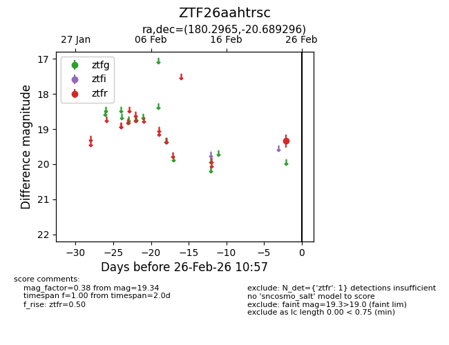
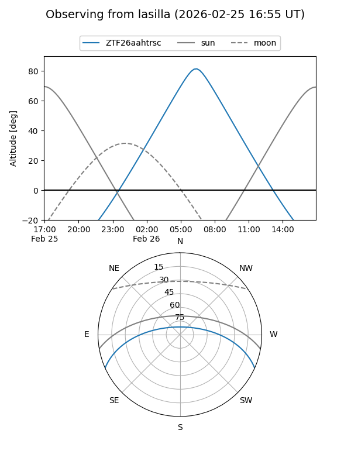
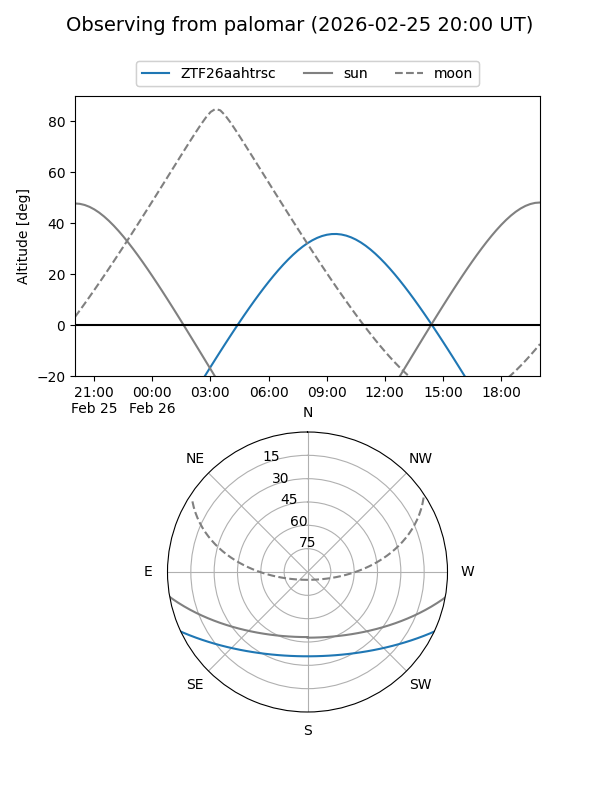

ZTF26aahtrsc
Target ZTF26aahtrsc at 2026-02-26 10:58
Aliases and brokers:
FINK: link
Lasair: link
ALeRCE: link
alt names
ZTF26aahtrsc (ztf,fink_ztf)
Coordinates:
equatorial (ra, dec) = 180.2965,-20.68930
equatorial (HMS+DMS) = 12:01:11.16,-20:41:21.47
galactic (l, b) = (287.3725,+40.65928)
Flags:
Photometry:
last ztfr=19.34
1 ztfr detections
Lightcurve

Visibility


Additional plots